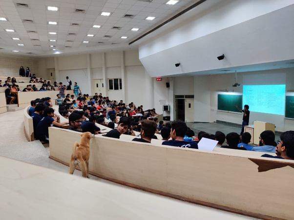

BITSAA Awards
Prof. Suresh Ramaswamy memorial award, 2016
The Prof. Suresh Ramaswamy Memorial Award is to honor the memory and lasting impact of Professor Ramaswamy in the lives of students he mentored. It aims to institutionalize his legacy, and promote activities that embody his spirit and enthusiasm for nurturing students.
https://www.bitsaa.org/page/prof-suresh-ramaswamy-memorial-awardMantra entrepreneur of the year award, 2017
The Mantra awards were instituted by CEL in 2009 to recognize and reward outstanding students who have demonstrated extraordinary leadership potential and/or entrepreneurial initiative.
https://alumniaffairs.bits-goa.ac.in/?page_id=232Guest lecture, SEDS Celestia
'Quantum Sensors for Navigation and Resource Exploration'
Abstract: With sensors at least 100 times more precise than any state of the art classical instrument, we will be able navigate without borders, explore hidden underground resources, monitor sea level change and predict volcanic eruption with extreme certainty with the help of Quantum Sensing Atomionics is a quantum sensing startup based out of Singapore, building a quantum accelerometer to measure gravity for resource exploration. This talk is about how the system works and what is the role of a mechanical design engineer in bringing this project to life.
.
HPAIR, ASIA
Harvard Project for Asian and International Relations, 2018 Malaysia
Track: Technology and innovation.
There were a series of activities and events that were hosted at Sunway University in Malasiya. I got a chance to meet artists, designers, lawyers and politicians who were all working towards a common gold of developing technology access to under developed countries. We tried come up with ideas to do this through group discussions and hackathons. This was also my first international trip and I had the best time exploring KL and Penang islands.
.
Guest Lecture, NVC BITS
New Venture Creation (NVC) is a unique course being offered at BITS, Pilani University that enables students to graduate as job givers rather than job seekers. The purpose of this course is not to teach entrepreneurship but to create entrepreneurs. The course enables the student start ups, mostly technology based, to grow by providing the building blocks for creating an enterprise using the lean startup method. This course provided students with the tools to take their ideas to the market.
I was a part of NVC as a student back in 2016. I topped the course across three campuses. I got to learn so much from the talks and curriculum during the course that I still make use of that knowledge. It was a great feeling to go back as a speaker. I spoke about deep tech and how students can tap into this potential while pursuing their education.
.
.
Guest speaker, E-Cell Yukta
This talk was at Cummins' college of engineering where I had to talk about the upcoming quantum sensing and the interdisciplinary work culture of Atomionics. I tried to inspire students to stay put in the technical field and become a part of the exciting future of quantum technology.
Another highlight of the talk was that it was an all girls engineering institute. Ratio of girls pursuing engineering in India is skewed, so I felt glad to direct my efforts in guiding and talking to the girls and encourage them.